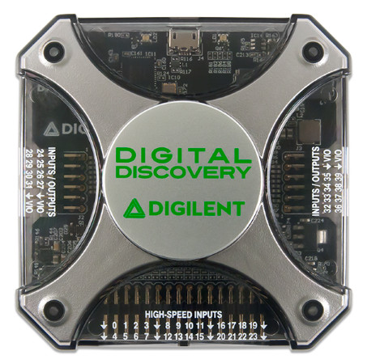
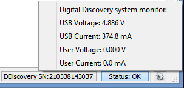

Getting started with the Digital Discovery
1. Hardware
To set up the Digital Discovery:
- First, install the Digilent WaveForms software on your PC. See Installer Details for more information.
- Connect the Digital Discovery to your PC using a USB cable.

| |
Recommended Operating Conditions |
Absolute Maximum Ratings |
| Voltage Supply |
1.2 .. 3.3 V, <100 mA |
0 .. 3.4 V, 100mA |
| Digital IOs (DIO24..39) Output |
0 .. 1.2/3.3 V |
0 .. 3.4 V, 16 mA |
| Digital IOs (DIO24..39) Input |
0 .. 5 V |
± 20 V |
| Digital INputs (DIN0..23) |
0 .. 5 V |
± 20 V |
For more information, visit the reference page.
2. WaveForms Software
See Installer Details for information on installing WaveForms.
See WaveForms for information on using the
software.
3. Troubleshooting
In case you receive the error message "Communication with device failed"
or "Device configuration failed":
- Remove all the attached components and wires from the Digital Discovery.
- Verify that the USB cable is attached correctly.
- Reconnect WaveForms to the Digital Discovery and, without opening any instruments, verify that the WaveForms system monitor is displaying voltage and current levels.
The Digital Discovery's system monitor displays the voltage, current, and temperature. In the main window, click the button in the status bar to show this information.

When no instrument is running, the device power consumption is around 2 W (400mA). Depending on the usage, consumption can increase subject to the following limitations:
- At 500 mA, the application interface displays a warning because this is the maximum allowed by the USB specification.
- At 1 A, the Digital Discovery device stops in order to prevent damage, and the application displays the “Communication with the device failed” error message.
- See Power Supplies for information regarding limitations.
If you receive the previously mentioned error message, or if the voltage is less than 4.5 V, try the following options:
- Try to use a different USB cable and computer plug.
- Use the USB plug on the back of the PC, not the one on the front panel.
- Use a short cable, do not use a long cable or cable extender.
- Use a powered USB-hub, avoid using an unpowered hub.
- Use a USB-Y cable to load power from two plugs.
- Reduce the current consumption on DVCC.
The LED on the right of the USB connector (LD1):
- blue: Indicates power good or ready. The brightness is initially, before software connection, at maximum level.
- green: Indicates active device, software connection or running.
- yellow: Indicates active device and VIO output enabled.
The LED on the left side of the USB connector (LD2):
- white: Indicates Logic Analyzer trigger.
- blue: Indicates auto triggering.
The LED is lit during Logic Analyzer triggered state, from triggered until done, but for a minimum of 166ms in order to show short captures too.
It the capture is long or the rate is high the led will stay lit for longer.
The Protocol tool also uses the Logic Analyzer resource and its triggering mechanism so it may be lit also when using this tool.
4. Power Supplies
The Digital Discovery digital voltage can be adjusted in the Supplies interface between 1.2 and 3.3 V. This applies to the voltage output and DIO channel's logic high level. In parallel with this, the input logic threshold for DIO and DIN is also changed.
Specifications:
- The positive power supply voltage output range is from 0 to 3.3 V.
- The output on VIO pins is limited to 100 mA. The actual over and under current limits are 150mA and -18mA.
5. Digital I/O
The Digital Discovery has 24 digital inputs (DIN 0-23) and 16 digital I/Os (DIO 24-39).
Specifications:
- The DIO pin's logic high level depends on the digital voltage, which can be adjusted in the Supplies interface between 1.2 and 3.3 V.
- The input logic threshold for both DIO and DIN depends on the set digital voltage, it is between 0.58 and 1.42V.
- The DIO pins have an adjustable drive strength between 2 and 16 mA and 10 kΩ pull-up/down for each pin.
- The pins can output push-pull (PP), open-drain (OD), open-source (OS), and three-state (TS) signals. For OD and OS signals, the pull-up or pull-down can be configured in the Power Supplies interface.
- The Pattern Generator frequency is 100 MHz and the custom buffer size is 32 Ki samples per channel.
- The Logic Analyzer device buffer is 256 MiBytes, which can be used in the following combinations: 200 MHz DIN0.23 DIO24.31 64 MiS, 400 MHz DIN0.15 128 MiS, 800 MHz DIN0.7 256 MiS, 200 MHz DIO24.39 DIN0.15 64 MiS, 400 MHz DIO24.39 128 MiS, 800 MHz DIO24.31 256 MiS. Having the Noise option checked, half of the buffer is used for storing noise marks, which are represented with gray shade in the plots. The noise means more than one transition between two acquisition samples.